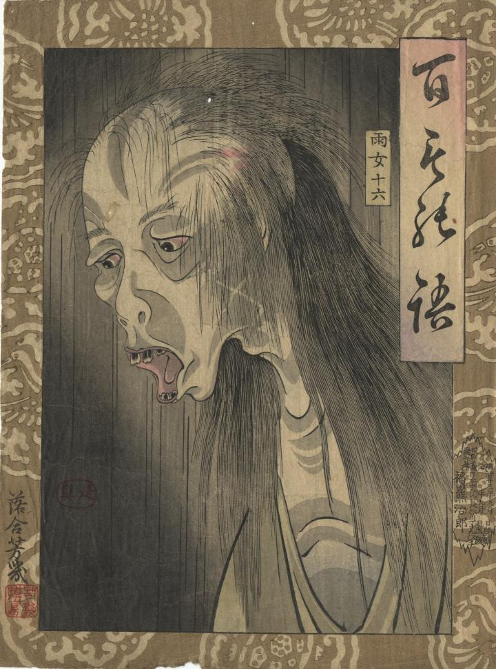

頬が痩せこけている雨女。口が開いており、お歯黒の歯が見えている。
著作者：落合芳幾／出典：親書誌：U426_nichibunken_0409：百もの語 雨女；ヒャクモノガタリ アメオンナ／日付：2015／資源識別子：U426_nichibunken_0409_0001_0000
Copyright (c)2010- International Research Center for Japanese Studies, Kyoto, Japan. All rights reserved.